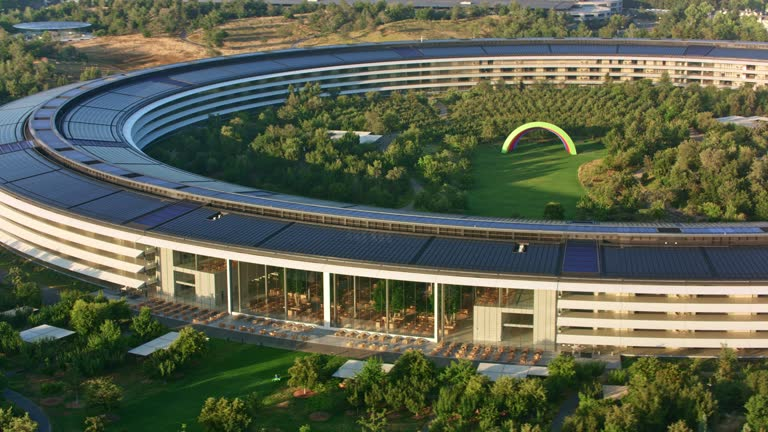
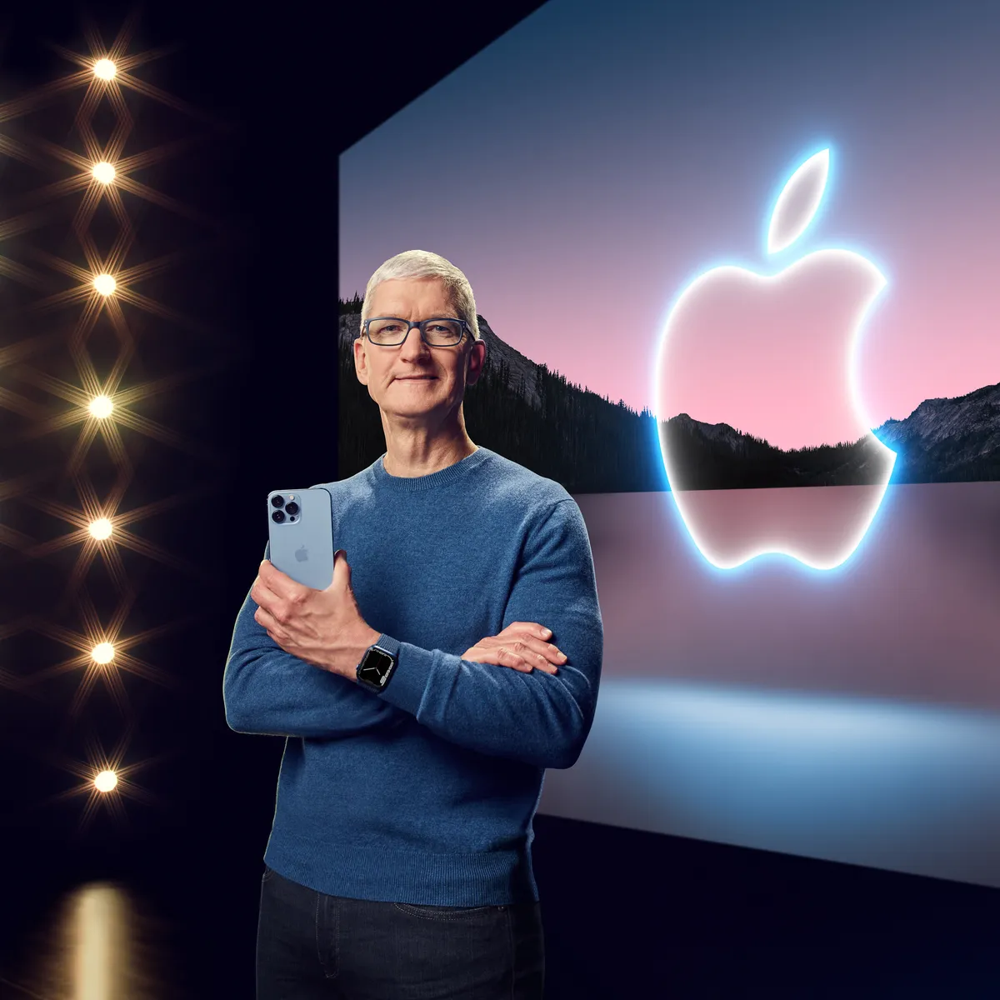

New leadership
After Steve Jobs’s death the main questions everybody was asking was – “Can Tim Cook continue Apple’s tradition of innovation?” or “Does Apple have a future beyond Steve Jobs?”
The first few years of Tim Cook as the new CEO of Apple weren’t easy. Apple fans and its loyal customer base were sceptical over Tim. Steve was an easy figure to rally around, he made the whole thing, he delivered keynotes, interviews and shared his opinions openly and always with an easy charismatic smile. Meanwhile, Tim Cook was none of that, his first time in front of a crowd for a product launch he was stiff. People saw Tim as an accountant, a corporate stiff taking the mantle from a visionary that was Steve. People around the world thought Apple’s time of innovation was over. But behind the curtains Apple was getting ready to change that.
Although Apple had lost their CEO Steve Jobs, Apple’s spirit was still alive in its employees and executives. Jony Ive and his inspired designs beat like a heart through every product. Apple's design team was very much still around, and the creative spark was still there even if something else or someone else was missing. The company carried on as it had before, the passing of Steve comforted since many of the products and developments being ushered out still had traces of his guidance in them. The iPhone 5 and 5S had, the handful of iPad models and even the first-generation iPad Mini. Things were moving predictably for the most part, sales were doing fine, numbers were fine, great even. Still, something was missing the company had the products, the ecosystem and Tim saying the right words but the Apple Vibe was missing.
That was until in 2014 Apple would innovate once again.
At an event in early September Tim Cook would take the stage like he had in previous years but this time something was different. He was confident he knew what was coming, he didn't just have an ace up his sleeve he had the whole deck, and the crowd could feel it too. There was an electricity in the air not felt since Steve Jobs opening the event with the message of Think Different, Apple's slogan. For the entirety of Tim Cook's tenure at the company excitement swelled in the crowd, after all this Auditorium held special meaning for company. This was where Steve Jobs unveiled not only the original Mac 30 years prior but the iMac as well birth and rebirth.
Tim instead of opening the event how he had in the past, he threw away the numbers, the sales figures didn't matter, at least at this event, and he just told the audience everything was great. The audience finally felt the excitement they once had with Steve at an apple event. And on this event Apple launched the iPhone 6 and 6 Plus. These products were revolutionary for apple and showed that Apple hadn’t lost its magic. Apple had taken inspiration from Steve’s past and innovated. They did something it would have never happened if Steve Jobs were still CEO as he had in the past said that everyone should be able to reach the corner of a phone with their thumb.
And this Apple event was not even half over. In this event Apple also announced Apple Pay and change the way we pay for things. But it still was not over. Tim Cook entered the stage once more because Apple still has “One more thing”.
What follows is a lot of things. Apple just announced the first completely new product since the passing of Steve Jobs. It's the birth of yet another industry dominance that even Apple didn't and couldn't anticipate. It was relief and comfort that Apple wasn't done. Yet Tim Cook returns to the stage the first Apple watch on his wrist and the audience shows its appreciation. The Apple watch being years upon years of work from everyone at Apple and it would eventually go on as the best-selling watch of all time.
A Lasting Legacy
Under Cook’s leadership, Apple has seen unparalleled financial success. When he took over, Apple’s market capitalization was about $350 billion. By 2023, it had exceeded $3 trillion, making Apple the first publicly traded company to reach this milestone. This growth has been driven by strong product sales, an expanding services ecosystem, and strategic entry into new markets.
While Cook’s Apple hasn’t launched products as revolutionary as the iPhone, his tenure has been marked by significant enhancements to existing product lines and the introduction of new categories.
- On the iPhone Tim Cook oversaw the introduction of larger-screen models like the iPhone 6, the iPhone X with its groundbreaking Face ID and edge-to-edge OLED display, and subsequent iterations that focused on camera technology, battery life, and performance.
- Apple Watch over its new generations focus on health and fitness tracking, including features like ECG and blood oxygen monitoring have made it more than just a watch but a device that allows you to be more informed about your health and personal life
- AirPods revolutionized wireless audio, while accessories like the MagSafe ecosystem and advancements in Apple Silicon have strengthened Apple’s hardware ecosystem.
- The transition to Apple-designed chips (M1, M2) has revitalized the Mac lineup, making it more efficient and powerful.
Wonderful Tools by Apple
Tim Cook has redefined Apple’s identity. While he may not share Steve Jobs’s flair for visionary product launches, his strategic focus on growth, operational excellence, and sustainability has made Apple a more stable, diversified, and globally influential company. Under his leadership, Apple continues to shape the future of technology and remains a symbol of premium quality and innovation.

And last year Tim Cook likely made his last redefining announcement as CEO of Apple. The announcement of a product that will change how we, as humans, interact with computers with the introduction of Apple Vision Pro.
This represents a bold gamble on the future of computing. With its cutting-edge technology and integration into Apple’s ecosystem, it has the potential to redefine productivity, entertainment, and digital interaction. While challenges exist, the Vision Pro could pave the way for Apple’s next era of innovation, extending its influence beyond traditional screens into immersive, spatial experiences. If successful, it might not only transform Apple’s product lineup but also reshape how humans interact with technology in the decades to come.